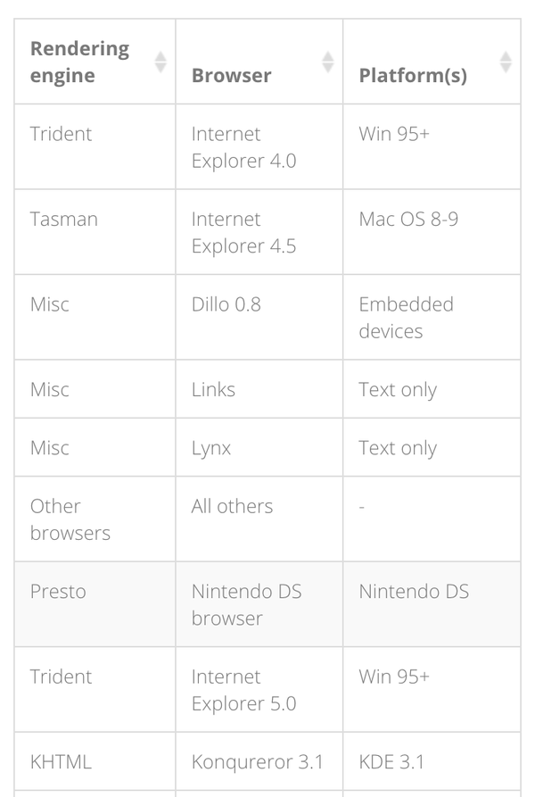

最近在做的两个网站：首先是公司产品的官网，然后是我们的产品——设备管理平台。两个网站均采用了响应式设计。从设计师的角度来讲，设计过程带给我的感受非常不同。
公司官网以内容资讯为主，页面少，功能非常简单，加载速度快，非常适合做响应式设计，在此就不多谈了。而我们的管理平台数据庞大、功能多、页面逻辑复杂，在第一个版本做完之后发现了很多问题。下面我说说这一类型网站做响应式设计时的处理难度：
1.页面层级结构：
对于PC端来说，管理类系统我比较倾向于将屏幕划分区块的设计，将操作对象置于某一区块，在其他区块查看它的信息和数据表现，有助于总览全局。然而对于移动网站来说，手机是无法将屏幕划分区块的，只能通过跳转页面来体现层级的深入。
如此一来，响应式设计是无法同时迁就各终端的体验的。如果保证移动端的页面完整，PC端过多的页面层级可能会让用户产生迷失的感觉。
对于这个问题我目前还没想到特别好的方式来处理，所以结论暂无……
2.页面元素构成：
1）表单：
总结一下我们系统管理平台各个页面的元素构成，最主要的元素就是表单（table）。在低分辨率下，最通常的处理方式是通过左右滑动手机屏幕来查看表单。然而这样处理会有一定的问题：首先从形式上讲，如果表单列非常多，用户左右滑动的时候会感觉很困扰。从内容上讲，如果表单中有需要操作的按钮或填写的内容，看不到第一列的项目名称或者项目序号，非常容易看串行导致误操作。
总那么应该如何处理呢？我目前总结如下几种：
A - responsive table：
如果表单需要批量操作，可以采用这种形式；
B - Flip Scroll
分辨率低时表头自动转换为固定列，通过左右滑动查看表格内容，好处是可以同时查看某一个项目的各项信息。
如果表单行数少而列太多，同时又不需要进行批量操作，可以采用这种形式。
C - Hidden Row Table
如果表单信息有主次之分，可以将次要信息折叠，待用户点击展开再进行操作。
后两种方式都可以在一定程度使表单在手机竖屏的情况下查看免去了大幅度的左右滑动，然而这两种方式有一定的限制，比如多行表单无法使用样式B，而样式C会使部分信息隐藏，需要增加用户操作步骤才能展示。根据我们管理平台的特点，目前第二版的设计打算主要采取样式A。
2）弹窗：
因为缺乏经验，在第一版设计时我先从pc端开始，再调试移动端，导致处理起来发生了许多问题……比如第一版中设计了大量的弹窗，一种是作为提示性的弹窗，文字内容较少，不需要用户进行操作；另一种是弹窗表格，需要用户进行大量填写，在电脑上看还没觉得有很大问题，到手机上发现体验非常变态……甚至有的弹窗超出了手机的一屏，还需要下滑才能填完……
在第二版中目前的考虑是尽量减少需要用户填写的弹窗，如果填写内容非常多，应该设置新的页面。
然而一个网站是不是一定要采用响应式设计呢？通过最近的学习，我认为在决定之前，应该先从以下几点考虑：
1.网站类型：如上文中举例，不再详述；
2.用户在各终端的使用场景：
－通常复杂的操作是在工作时间的办公场所进行，PC使用概率比移动端更大；
－移动端更多在办公场所以外使用，用户此时需要使用产品的原因是希望进行时间相对紧急的操作，以及得到即时的信息通知。
3.通过2的总结，用户在各终端使用场景下需要的功能经常是不同的。其实条件允许的情况下，为复杂网站分别做两套设计也是个不错的方案。
举下dropbox的例子：
PC端网站：
移动端网站：
如图所示，在功能上，移动网站仅保留了文件搜索、文件共享、文件删除的功能。导航栏菜单仅保留了4个基本选项。
从视觉上，移动网站采用了和pc端不同的设计风格。桌面版采用了清新的扁平化设计风格，图标文字小而精致，各个页面配有手绘风格插图；移动版则采用了大尺寸元素和大字号设计，方便手指在小屏幕上进行点击。（p.s.其实拟物蓝导航条和浓厚的阴影让我怀疑他们的移动网站很久没更新过了……）
然而比较重要的一点是，dropbox在移动端上是以APP为主，移动网站为辅。APP上的功能和视觉风格和PC端网页是基本一致的，这保证了用户在移动端也能拥有比较完整的体验。
讲真，无论是不是响应式，设计师的工作量差不多是一样的，甚至响应式要考虑的更多，因为受到的局限很大。开发同学的工作量我还不太清楚，虽然只需要维护同一套代码，然而前端调试起来貌似也很麻烦的样子……所以对于功能复杂的网站，我比较倾向于做两套（甚至更多）不同的设计——当然以上一切的前提是你们团队的人手足够……
最后我的结论是：
－响应式无法同时迁就各分辨率下的体验：pc端适合层级少，单个页面内容丰富，屏幕可以划分区块；移动端适合多层级，屏幕无法分区。
－适合响应式设计的网站类型：以内容资讯类为主的网站，如新闻、小型企业官网
－不适合响应式设计的网站类型：功能复杂的管理类网站，如CRM、MIS、OA系统等
然而我们现在还是可以看到很多管理系统类网站也开始采用了响应式设计，网上也有大量的模板可以参考。所以这个问题我觉得还不能下一个绝对的结论，还是要根据具体的项目来分析。
欢迎移步我的知乎专栏： 线框仔的日常-响应式设计浅谈：交互篇